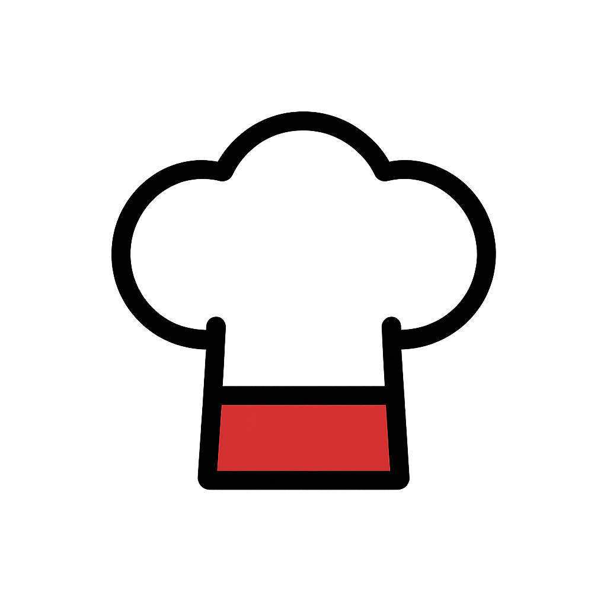

<mat-toolbar  role="heading" class="toolbar">
    <button mat-icon-button  class="custom-icon-button" (click)="onChefHatClick()">
            
    </button>
    
    <button mat-button class="home-btn" (click)="onChefHatClick()">Best Recipe</button>
    <span class="example-spacer"></span>
    <button mat-icon-button class="example-icon favorite-icon" aria-label="Example icon-button with heart icon">
      <mat-icon>favorite</mat-icon>
    </button>
    <button mat-icon-button class="example-icon" aria-label="Example icon-button with share icon">
      <mat-icon>share</mat-icon>
    </button>
    <app-search></app-search>
  </mat-toolbar>
  